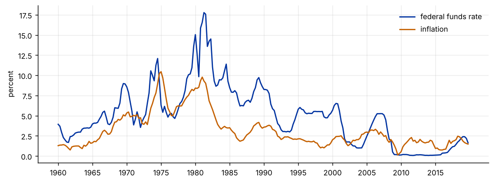
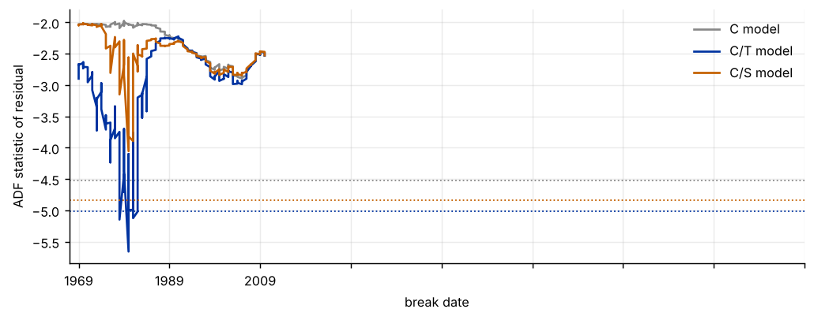

Step 1The question and the model
The Fisher relation says the nominal interest rate moves one-for-one with expected inflation in the long run. Our question is: are the U.S. federal funds rate and inflation cointegrated, and is the long-run relation stable over 1960–2019? Two series are cointegrated if each has a unit root but a linear combination is stationary:
Engle–Granger and Phillips–Ouliaris test the null of no cointegration using the residual \(\hat u_t\). The Johansen test works on the VAR and tests the rank of the long-run matrix. Gregory–Hansen (1996) allows the intercept and slope to shift once, at an unknown date \(\tau\), and takes the most negative ADF statistic over all dates:
| Symbol | Variable | Definition |
|---|---|---|
| \(i_t\) | fedfunds |
federal funds rate, percent |
| \(\pi_t\) | inflation |
annualised inflation, percent |
Before you estimate anything
Cointegration needs economic theory first. Say which relation you expect, with which sign and size, and whether you expect it to hold for the whole sample. The null of every test below is no cointegration, so failing to reject is weak evidence for "no long-run relation", especially in a sample of 60 years with a policy regime change.
How to write it: model section
We test for a long-run relation between the federal funds rate and inflation, as implied by the Fisher relation. We first check that both series are I(1). We then apply the Engle–Granger and Phillips–Ouliaris residual tests and the Johansen trace test, and the Gregory–Hansen test, which allows a single break in the intercept and slope at an unknown date. Critical values for the Gregory–Hansen test are simulated for our sample size.
Step 2Load the data and check the order of integration
import warnings; warnings.filterwarnings("ignore")
import numpy as np, pandas as pd
import matplotlib.pyplot as plt
import statsmodels.api as sm
from statsmodels.tsa.stattools import adfuller, kpss
t = pd.read_csv("taylor.csv").set_index("date")
i, p = t.fedfunds, t.inflation
print(t.index[0], "to", t.index[-1], "|", len(t), "quarters")
rows = []
for name, s in [("fedfunds", i), ("inflation", p)]:
for lab, z in [("level", s), ("first difference", s.diff().dropna())]:
a = adfuller(z, regression="c", autolag="AIC")
k = kpss(z, regression="c", nlags="auto")
rows.append((name, lab, a[0], a[1], k[0], k[1]))
print(pd.DataFrame(rows, columns=["series", "form", "ADF stat", "ADF p", "KPSS stat", "KPSS p"]).round(3).to_string(index=False))
fig, ax = plt.subplots(figsize=(8.5, 3.2))
ax.plot(range(len(t)), i.values, color="#0033a0", label="federal funds rate")
ax.plot(range(len(t)), p.values, color="#c46000", label="inflation")
tk = list(range(0, len(t), 20)); ax.set_xticks(tk); ax.set_xticklabels([t.index[j][:4] for j in tk])
ax.set_ylabel("percent"); ax.legend(frameon=False)
plt.tight_layout()1960Q1 to 2019Q4 | 240 quarters series form ADF stat ADF p KPSS stat KPSS p fedfunds level -1.904 0.330 0.910 0.010 fedfunds first difference -6.745 0.000 0.068 0.100 inflation level -1.749 0.406 0.725 0.011 inflation first difference -4.786 0.000 0.101 0.100

How to read it
The sample has 240 quarters, 1960Q1 to 2019Q4. Both series trend and move together in the figure: they rise through the 1970s, peak around 1980–81 and fall afterwards. The ADF test does not reject a unit root in either level (p = 0.33 for the funds rate, 0.41 for inflation), and KPSS, whose null is stationarity, rejects at 5% for both (p = 0.010 and 0.011). In first differences ADF rejects (p < 0.001) and KPSS does not (p = 0.10). Both series are therefore treated as I(1), and a cointegration test is meaningful.
Step 3Engle–Granger and Phillips–Ouliaris
from arch.unitroot.cointegration import engle_granger, phillips_ouliaris
y, x = i, t[["inflation"]]
eg = engle_granger(y, x, trend="c", method="aic", max_lags=8)
eg_r = engle_granger(p, i.to_frame(), trend="c", method="aic", max_lags=8)
print(f"Engle-Granger, fedfunds on inflation: stat {eg.stat:.2f}, p = {eg.pvalue:.3f}, lags {eg.lags}")
print(" 5% critical value:", round(eg.critical_values[5], 2), "| long-run slope:", round(-eg.cointegrating_vector.iloc[1], 2))
print(f"Engle-Granger, inflation on fedfunds: stat {eg_r.stat:.2f}, p = {eg_r.pvalue:.3f}")
for tt in ["Zt", "Za", "Pu", "Pz"]:
po = phillips_ouliaris(y, x, trend="c", test_type=tt)
print(f"Phillips-Ouliaris {tt}: stat {po.stat:.2f}, p = {po.pvalue:.3f}")
from statsmodels.tsa.vector_ar.vecm import coint_johansen
rows = []
for k in (1, 2, 3, 4):
j = coint_johansen(t[["fedfunds", "inflation"]], det_order=0, k_ar_diff=k)
rows.append((k, j.lr1[0], j.cvt[0, 1], j.lr1[1], j.cvt[1, 1]))
print("\nJohansen trace test (constant in the cointegrating space)")
print(pd.DataFrame(rows, columns=["VAR lag diffs", "trace r=0", "5% cv", "trace r<=1", "5% cv "]).round(2).to_string(index=False))Engle-Granger, fedfunds on inflation: stat -2.05, p = 0.503, lags 7
5% critical value: -3.37 | long-run slope: 1.25
Engle-Granger, inflation on fedfunds: stat -2.03, p = 0.513
Phillips-Ouliaris Zt: stat -3.01, p = 0.109
Phillips-Ouliaris Za: stat -17.54, p = 0.092
Phillips-Ouliaris Pu: stat 31.64, p = 0.066
Phillips-Ouliaris Pz: stat 49.45, p = 0.081
Johansen trace test (constant in the cointegrating space)
VAR lag diffs trace r=0 5% cv trace r<=1 5% cv
1 17.71 15.49 5.68 3.84
2 14.78 15.49 5.08 3.84
3 16.79 15.49 7.52 3.84
4 14.00 15.49 5.07 3.84How to read it
Engle–Granger does not find cointegration: the statistic is −2.05 against a 5% critical value of −3.37 (p = 0.50), and swapping the dependent variable gives the same answer (−2.03, p = 0.51). The static long-run slope is 1.25, close to the Fisher value of one, but a slope from a residual that is not stationary is not reliable. Phillips–Ouliaris is closer to the line but does not reject at 5% in any of its four versions (p between 0.07 and 0.11). The Johansen trace test is not stable: it rejects r = 0 with one and three lagged differences (17.7 and 16.8 against 15.5) and does not reject with two and four (14.8 and 14.0). When the result depends on the lag, report all of them and say the evidence is mixed. The next step asks whether one fixed relation is the wrong model.
Step 4Allow a structural break: the Gregory–Hansen test
def adf_stat(u, maxlag=8):
best = None
du = np.diff(u); n = len(du)
for k in range(0, maxlag + 1):
Y = du[maxlag:]
cols = [u[maxlag:-1]] + [du[maxlag - j:n - j] for j in range(1, k + 1)]
res = sm.OLS(Y, np.column_stack(cols)).fit()
ic = len(Y) * np.log(res.ssr / len(Y)) + 2 * (k + 1)
if best is None or ic < best[0]: best = (ic, res.tvalues[0], k)
return best[1], best[2]
def design(y, x, tb, model):
T = len(y); tt = np.arange(T); D = (tt >= tb).astype(float)
cols = [np.ones(T), D, x]
if model == "C/T": cols = [np.ones(T), D, tt.astype(float), x]
if model == "C/S": cols = [np.ones(T), D, x, x * D]
return np.column_stack(cols)
def gh(y, x, model, trim=.15, maxlag=8):
T = len(y); out = []
for tb in range(int(trim * T), int((1 - trim) * T)):
u = sm.OLS(y, design(y, x, tb, model)).fit().resid
st, k = adf_stat(u, maxlag); out.append((st, tb, k))
return min(out), out
yv, xv = i.values, p.values
res = {}
for m in ["C", "C/T", "C/S"]:
best, path = gh(yv, xv, m)
res[m] = (best, path)
print(f"{m:4s}: GH statistic {best[0]:6.2f} break at {t.index[best[1]]} (ADF lags {best[2]})")C : GH statistic -2.89 break at 2005Q1 (ADF lags 7) C/T : GH statistic -5.66 break at 1980Q1 (ADF lags 1) C/S : GH statistic -4.05 break at 1980Q1 (ADF lags 1)
# simulated critical values: two independent random walks, no break, k = 0 ADF (fast version)
rng = np.random.default_rng(7)
T, R, trim = len(t), 300, .15
def adf0(u):
du = np.diff(u); xx = u[:-1]
b = (xx @ du) / (xx @ xx); e = du - b * xx
return b / np.sqrt(e @ e / (len(du) - 1) / (xx @ xx))
def gh0(y, x, model):
best = 1e9
for tb in range(int(trim * T), int((1 - trim) * T)):
u = y - design(y, x, tb, model) @ np.linalg.lstsq(design(y, x, tb, model), y, rcond=None)[0]
best = min(best, adf0(u))
return best
sim = {m: [] for m in res}
for r in range(R):
ys, xs = np.cumsum(rng.standard_normal(T)), np.cumsum(rng.standard_normal(T))
for m in sim: sim[m].append(gh0(ys, xs, m))
cv = pd.DataFrame({m: np.percentile(v, [1, 5, 10]) for m, v in sim.items()}, index=["1%", "5%", "10%"])
print(f"Simulated critical values ({R} replications, T = {T})")
print(cv.round(2).to_string())
for m in res:
s = res[m][0][0]
print(f"{m:4s} statistic {s:6.2f} -> rejects at 5%: {s < cv.loc['5%', m]}, at 10%: {s < cv.loc['10%', m]}")
fig, ax = plt.subplots(figsize=(8, 3.2))
for m, c in [("C", "#888"), ("C/T", "#0033a0"), ("C/S", "#c46000")]:
path = res[m][1]
ax.plot([t.index[b][:4] for _, b, _ in path][::1], [s for s, _, _ in path], color=c, label=f"{m} model")
ax.axhline(cv.loc["5%", m], color=c, ls=":", lw=1)
ax.set_xticks(range(0, len(res["C"][1]), 20)); ax.set_xlabel("break date"); ax.set_ylabel("ADF statistic of residual"); ax.legend(frameon=False)
plt.tight_layout()Simulated critical values (300 replications, T = 240)
C C/T C/S
1% -5.03 -5.79 -5.25
5% -4.52 -5.01 -4.84
10% -4.32 -4.76 -4.56
C statistic -2.89 -> rejects at 5%: False, at 10%: False
C/T statistic -5.66 -> rejects at 5%: True, at 10%: True
C/S statistic -4.05 -> rejects at 5%: False, at 10%: False
How to read it
The Gregory–Hansen statistic is −2.89 for the intercept-shift model (C), −5.66 for the model with a shift and trend (C/T) and −4.05 for the model with a shift in intercept and slope (C/S). The simulated 5% critical values for our sample size are −4.52, −5.01 and −4.84. Only C/T rejects, at both 5% and 10%; it does not reject at 1% (critical value −5.79). Both C/T and C/S select a break at 1980Q1, which is the start of the Volcker disinflation. The C model picks 2005Q1 and finds nothing. In the figure the C/T line dips far below its dotted critical value around 1980 and nowhere else. The evidence for cointegration with a break is therefore specific to one specification, so we call it suggestive, not settled. One caveat: the simulated critical values use an ADF regression with no lagged differences, while the statistics use AIC-chosen lags, so the comparison is approximate. With 300 replications the 5% values have some simulation error.
How to write it: results
The Engle–Granger and Phillips–Ouliaris tests do not reject the null of no cointegration between the federal funds rate and inflation (Engle–Granger statistic −2.05, p = 0.50), and the Johansen trace test is sensitive to the lag length. The Gregory–Hansen test with a break in the intercept and trend finds a statistic of −5.66 at 1980Q1, below the simulated 5% critical value of −5.01, while the intercept-only and regime-shift versions do not reject at 5% (−2.89 and −4.05). We read this as evidence that a long-run Fisher relation exists only after allowing for the change in monetary regime around 1980, and we treat it as suggestive because it depends on the specification.
Step 5The long-run relation before and after the break
tb = res["C/S"][0][1]; T = len(t); D = (np.arange(T) >= tb).astype(float)
Xs = np.column_stack([np.ones(T), D, xv, xv * D])
ols = sm.OLS(yv, Xs).fit(cov_type="HAC", cov_kwds={"maxlags": 8})
b = ols.params; V = ols.cov_params()
print("Break-date model (C/S), break at", t.index[tb])
print(f" before: intercept {b[0]:.2f}, slope {b[2]:.2f} (HAC s.e. {np.sqrt(V[2,2]):.2f})")
w = np.array([0, 0, 1, 1]); se_a = np.sqrt(w @ V @ w)
print(f" after: intercept {b[0]+b[1]:.2f}, slope {b[2]+b[3]:.2f} (HAC s.e. {se_a:.2f})")
from arch.unitroot.cointegration import DynamicOLS
for lab, sl in [("whole sample", slice(None)), ("before break", slice(0, tb)), ("after break", slice(tb, None))]:
dd = DynamicOLS(i.iloc[sl], t[["inflation"]].iloc[sl], trend="c", lags=2, leads=2, common=True).fit(cov_type="robust")
print(f"DOLS {lab:13s}: slope {dd.params['inflation']:.2f} (s.e. {dd.std_errors['inflation']:.2f}), n = {len(i.iloc[sl])}")Break-date model (C/S), break at 1980Q1 before: intercept 2.16, slope 0.81 (HAC s.e. 0.15) after: intercept -0.38, slope 1.91 (HAC s.e. 0.19) DOLS whole sample : slope 1.31 (s.e. 0.23), n = 240 DOLS before break : slope 0.77 (s.e. 0.06), n = 80 DOLS after break : slope 2.20 (s.e. 0.24), n = 160
How to read it
The break model splits the long-run slope in two. Before 1980Q1 the slope on inflation is 0.81 (HAC standard error 0.15); afterwards it is 1.91 (0.19). The intercept falls from 2.16 to −0.38. DOLS, which corrects for endogeneity of inflation and for serial correlation, gives 0.77 (0.06) before the break and 2.20 (0.24) after, and 1.31 (0.23) for the whole sample. The whole-sample value is an average of two regimes and describes neither. After 1980 the funds rate moves by about two points for each point of inflation, which is the pattern of a central bank that raises the real rate when inflation rises (the Taylor principle). Before 1980 the response was below one-for-one. This is a description of the long-run association, not a causal effect, and the post-1980 sample has a long stretch of near-zero rates after 2008 that pulls the slope in a way the linear model cannot capture.
Step 6What to report in the paper
| Item | What to show |
|---|---|
| Orders of integration | ADF and KPSS for levels and first differences |
| Residual tests | Engle–Granger (both normalisations) and Phillips–Ouliaris, with the lag rule |
| System test | Johansen trace test with several lag lengths |
| Break | Gregory–Hansen statistic, break date, model, and how critical values were obtained |
| Long-run estimate | DOLS or FMOLS coefficient with robust standard errors, by regime if there is a break |
Common mistakes
- Skipping the unit-root step. Cointegration tests make sense only for I(1) series. Report ADF and KPSS together.
- Treating "no rejection" as "no relation". These tests have low power against a relation that shifted. Run the break test before you conclude.
- Using Engle–Granger critical values for Gregory–Hansen. The minimum over break dates is more negative. Use the Gregory–Hansen values.
- Reading t-statistics of a static long-run regression. The OLS standard errors are not valid. Use DOLS or FMOLS.
- Choosing the break date and then telling a story only about it. Check that the date makes economic sense, such as the 1979–1982 monetary regime change.
- Reporting one lag length for Johansen. The result can change with the lag, as the table shows.